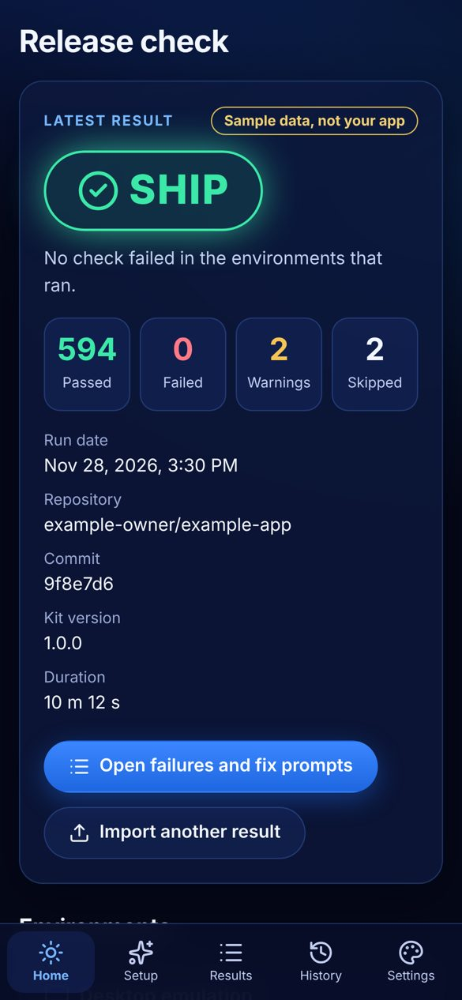
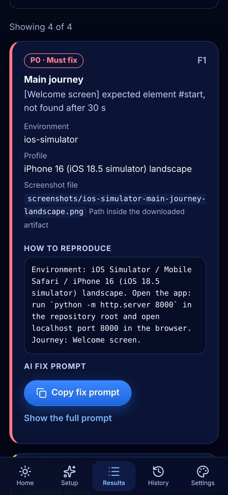
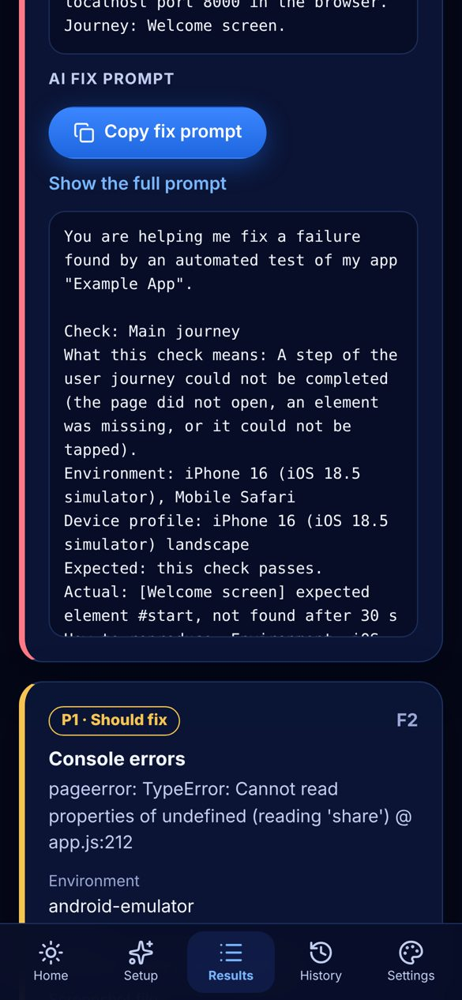

How to test a website on iPhone Safari and Android Chrome without a Mac
Short answer: you cannot run Safari on Windows or Linux, but GitHub Actions can lend you a macOS machine that includes the iOS Simulator, and the simulator runs Mobile Safari. A workflow can boot an iPhone, open your site, take a screenshot and run checks. Android Chrome works the same way with an Android emulator on a Linux runner. You do not need to own a Mac, an iPhone or an Android phone. In public repositories the standard runners are free.
Why a desktop browser is not enough
Device emulation in desktop browsers and test tools changes the user agent, the screen size, the viewport and touch support. It does not change the browser engine. A WebKit build on Linux is the same engine family as Safari, but it is not iOS Safari either. The problems that show up only on iPhone are well known:
100vhincludes the browser toolbar, so the bottom of a full-height screen is hidden. Dynamic viewport units (100dvh) usually fix it.- Content sits under the notch or the home bar when safe-area insets (
env(safe-area-inset-*)) are missing. - The page zooms in when you tap a text field whose font is smaller than 16 px.
- Date inputs look and behave differently.
- Buttons smaller than 44 × 44 px are hard to tap.
The free route: 5 steps with GitHub Actions
- Put your project in a GitHub repository. Standard GitHub-hosted runners are free in public repositories.
- Add a workflow that runs on a macOS runner. Apple's command line tools can boot a simulator (
xcrun simctl boot), open your address in Safari (xcrun simctl openurl) and take a screenshot (xcrun simctl io … screenshot). To tap and type through your pages, add a WebDriver tool such as Appium. - Add a second workflow for Android. The community action
reactivecircus/android-emulator-runnerstarts an emulator on a Linux runner. - Add a quick desktop layer. Playwright with Chromium, Firefox and WebKit and phone-sized screens is fast and catches many layout problems, as long as you remember it is not the iPhone engine.
- Decide what counts as a failure. Good first checks: sideways scrolling on a phone, tap targets under 44 px, text fields small enough to trigger zoom, a main journey (open the site, tap Start, expect the welcome screen) and, for PWAs, whether the page opens offline.
A minimal iPhone Safari workflow you can copy
Save this as .github/workflows/iphone-safari-smoke.yml, change the address, then open Actions and run it. It boots an available iPhone simulator, opens your site in Mobile Safari and uploads a screenshot. We ran exactly this file on GitHub on November 27, 2026 (UTC) before publishing it here.
name: iPhone Safari smoke test
on:
workflow_dispatch:
jobs:
ios:
runs-on: macos-15
steps:
- name: Boot an iPhone simulator
run: |
UDID=$(xcrun simctl list devices available -j | python3 -c "import json,sys; d=json.load(sys.stdin)['devices']; print(next(x['udid'] for r in d.values() for x in r if x['name'].startswith('iPhone')))")
xcrun simctl boot "$UDID"
xcrun simctl bootstatus "$UDID" -b
echo "UDID=$UDID" >> "$GITHUB_ENV"
- name: Open your site in Mobile Safari and take a screenshot
run: |
xcrun simctl openurl "$UDID" "https://example.com"
sleep 20
xcrun simctl io "$UDID" screenshot iphone-safari.png
- uses: actions/upload-artifact@v4
with:
name: iphone-safari-screenshot
path: iphone-safari.pngThis only shows the page; it does not tap or check anything. Real checks (journeys, overflow, tap targets, console errors) need a WebDriver session, which is where most of the setup time goes.
How long and how much
| Question | What we measured or read |
|---|---|
| Time | On our own repository on November 27, 2026, a full run with desktop browsers, an Android 14 emulator and the iOS Simulator in parallel took about 10 to 13 minutes (web about 1 minute, Android about 2.5 minutes, iOS Simulator about 9 to 12 minutes). A web-only check took about 2 minutes. The first iOS run is the slowest. Your project will differ. |
| Public repository | Standard GitHub-hosted runners are free. |
| Private repository | When we checked GitHub's documentation on November 28, 2026, GitHub Free included $12 of Actions usage a month (about 2,000 standard Linux minutes). macOS minutes cost $0.062 each, about 10 times a Linux minute. Check GitHub's current prices before you rely on these numbers. |
What this will still miss
Simulators and emulators do not show real hardware, real network conditions, camera, sensors or push notifications. Android phones from different makers add their own changes. A PWA added to a home screen can behave differently from the same page in a browser tab. None of this tests native apps. Before an important launch, open your most important screens on a physical phone if you can borrow one.
Frequently asked questions
How can I test my website on iPhone Safari without a Mac?
Use GitHub Actions: boot the iOS Simulator on a GitHub-hosted macOS runner and open your site in Mobile Safari, as in the example above. You need a GitHub account and a web address for your site, not a Mac or an iPhone.
Is WebKit on Linux the same as iPhone Safari?
No. It is the same engine family, but iOS Safari differs in viewport units, safe-area insets and keyboard behavior. Use the iOS Simulator for iPhone checks and keep the desktop layer for speed.
Can I test a PWA on iPhone and Android without owning the phones?
Yes for loading, layout, journeys and offline start. Home screen installation, push notifications and hardware features need a physical phone.
What can simulator testing not catch?
Hardware, real networks, camera, sensors, push notifications and native apps. A pass means the checks that ran passed, not that the app works on every phone.
A ready-made kit, if you would rather not build this (disclosure: we sell it)
Setting all of this up takes time, and it breaks when runner images change. We packaged our own setup as ÜNVERCO App Tester: four GitHub Actions workflows (one button for everything, plus each environment on its own), one settings file for your app, a report with a clear verdict (SHIP, DON'T SHIP or INCOMPLETE), a ready-to-paste fix prompt for your AI coding assistant for every failure, and a small offline panel to read the results in five languages. The tests run in your own GitHub account. It does not test native apps and it does not change your code. If you enjoy building it yourself, the steps above are enough to start, and they cost nothing in a public repository.



See ÜNVERCO App Tester on Etsy
The Etsy app cannot download digital files. After buying, open etsy.com in a web browser and go to Your account > Purchases.